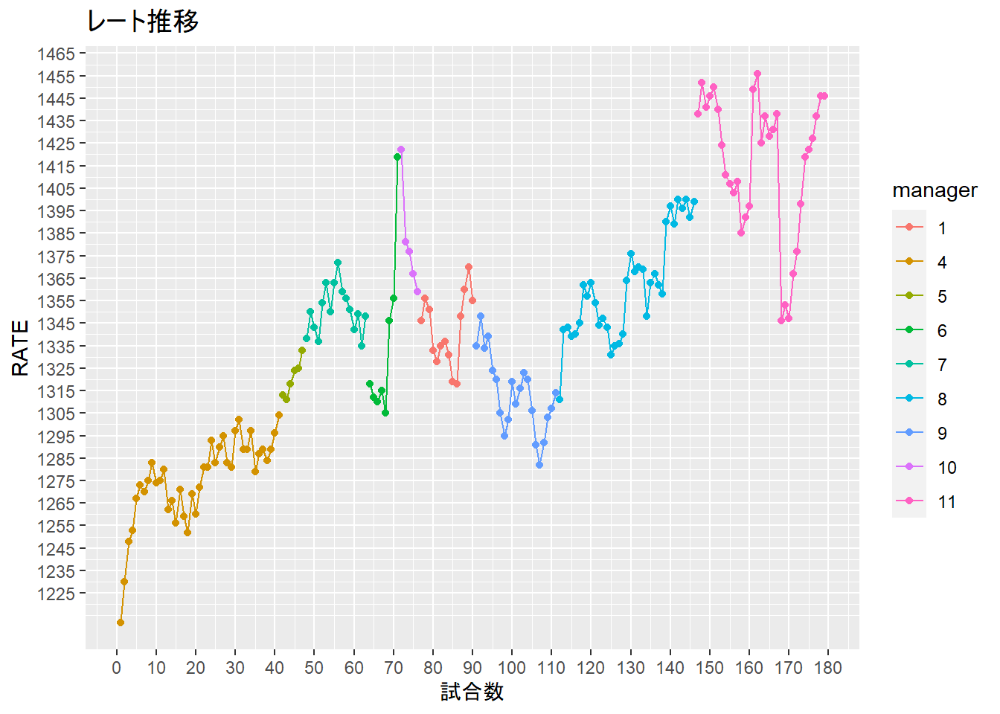
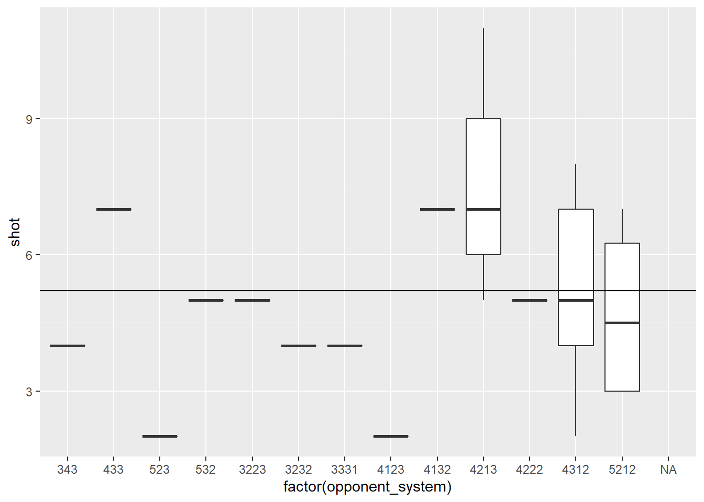
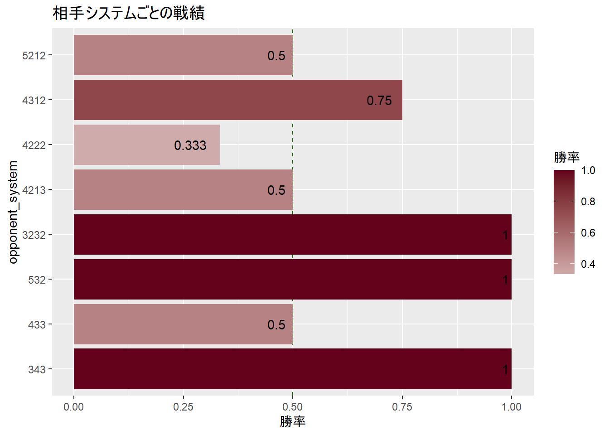

# データ整形
score %>%
filter(CP == 0) %>%
count()## # A tibble: 1 x 1
## n
## <int>
## 1 179score_manager %>%
filter(CP == 0) %>%
group_by(manager) %>%
summarise(n = n(),
GF = mean(GF,na.rm = T),
GA = mean(GA,na.rm = T),
win = sum(W),
shot = mean(shot,na.rm = T),
pass = mean(pass,na.rm = T),
Win_rate = mean(W),
lose_rate = mean(L),
possesion = mean(possesion,na.rm = T))## # A tibble: 9 x 10
## manager n GF GA win shot pass Win_rate lose_rate possesion
## <dbl> <int> <dbl> <dbl> <int> <dbl> <dbl> <dbl> <dbl> <dbl>
## 1 1 14 1.71 1.71 7 3.92 0.825 0.5 0.357 0.526
## 2 4 41 1.85 1.37 23 5.38 0.833 0.561 0.293 0.553
## 3 5 6 2.67 1.67 4 6 0.837 0.667 0 0.575
## 4 6 8 2.25 0.75 5 4.57 0.854 0.625 0.125 0.513
## 5 7 16 2 1.56 8 5.78 0.832 0.5 0.375 0.533
## 6 8 35 1.94 1.63 16 4.43 0.835 0.457 0.343 0.561
## 7 9 21 2 1.81 10 4.89 0.846 0.476 0.381 0.566
## 8 10 5 1 2.6 0 3 0.802 0 0.8 0.518
## 9 11 33 2.24 0.939 22 5.14 0.837 0.667 0.182 0.556score_manager %>%
filter(CP == 0) %>%
ggplot(aes(x= 1:nrow(.), y= rate, color = factor(manager)))+
geom_point()+
geom_line()+
labs(x = "試合数", y = "RATE", title = "レート推移",
family = "Meiryo", color = "manager")+
scale_y_continuous(breaks = seq(1225, 1500, by = 10))+
scale_x_continuous(breaks = seq(0, 200, by = 10))
#全戦績平均
score %>%
filter(CP == 0,
manager %in% c(11)) %>%
summarise(GF = mean(GF),
GA = mean(GA),
Win_rate = mean(W),
lose_rate = mean(L),
n = n(),
rate = min(rate)) %>%
filter(n >= 2)## # A tibble: 1 x 6
## GF GA Win_rate lose_rate n rate
## <dbl> <dbl> <dbl> <dbl> <int> <dbl>
## 1 2.24 0.939 0.667 0.182 33 1346#相手フォーメーションごと戦績
result_opsys <- score_manager %>%
filter(CP == 0,
manager %in% c(11)) %>%
group_by(opponent_system) %>%
summarise(GF = mean(GF),
GA = mean(GA),
Win_rate = mean(W),
lose_rate = mean(L),
shot = mean(shot,na.rm = T),
pass = mean(pass,na.rm = T),
possesion = mean(possesion,na.rm = T),
n = n(),
rate = min(rate)) %>%
filter(n >= 2)
score_manager %>%
filter(CP == 0,
manager == 11) %>%
ggplot()+
geom_boxplot(aes(x = factor(opponent_system), y = shot))+
geom_hline(yintercept = mean(score_manager$shot, na.rm = T))## Warning: Removed 11 rows containing non-finite values (stat_boxplot).
#結果①
result_opsys## # A tibble: 8 x 10
## opponent_system GF GA Win_rate lose_rate shot pass possesion n
## <dbl> <dbl> <dbl> <dbl> <dbl> <dbl> <dbl> <dbl> <int>
## 1 343 1.5 0 1 0 4 0.85 0.51 2
## 2 433 2.5 1.5 0.5 0.5 7 0.9 0.49 2
## 3 532 3.5 1 1 0 5 0.83 0.54 2
## 4 3232 2 0 1 0 4 0.84 0.62 2
## 5 4213 3.5 1.25 0.5 0.25 7.67 0.863 0.533 4
## 6 4222 0.667 0.333 0.333 0 5 0.81 0.63 3
## 7 4312 2.5 1.12 0.75 0.25 5.2 0.828 0.544 8
## 8 5212 2.25 1 0.5 0 4.75 0.832 0.588 4
## # ... with 1 more variable: rate <dbl>#結果②
#plot
result_opsys %>%
mutate(opponent_system = as.factor(opponent_system)) %>%
arrange(desc(opponent_system) )%>%
ggplot(aes(x = opponent_system, y = Win_rate,
fill = Win_rate))+
geom_hline(yintercept = 0.5, lty = 2, color = "#1b6401")+
geom_bar(aes(y = Win_rate), stat = "identity")+
geom_text(aes(label = round(Win_rate,3)), hjust = 1.4)+
scale_fill_gradient2(low = "grey", high = "#64011b", aesthetics = "fill")+
labs(y = "勝率", fill = "勝率")+
coord_flip()+
labs(title = "相手システムごとの戦績")